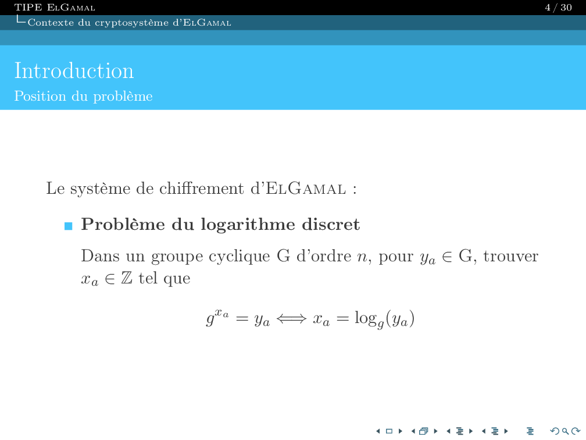
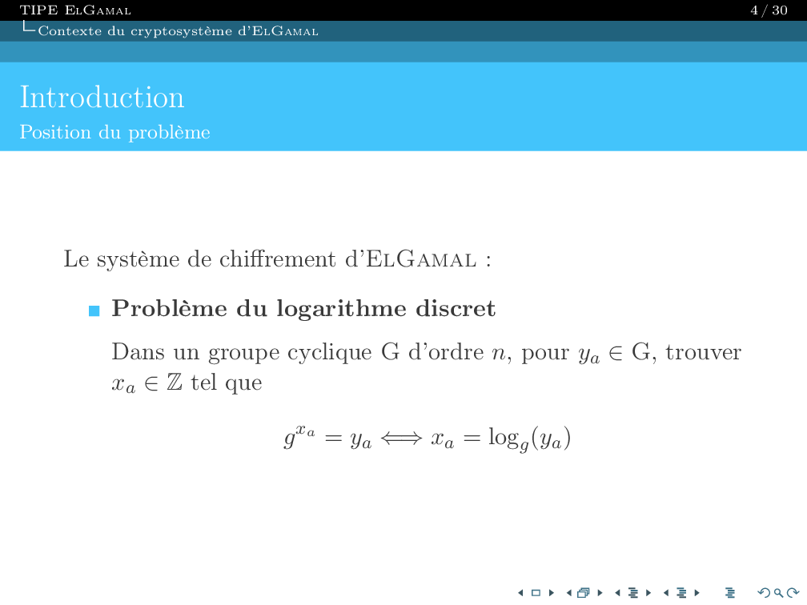
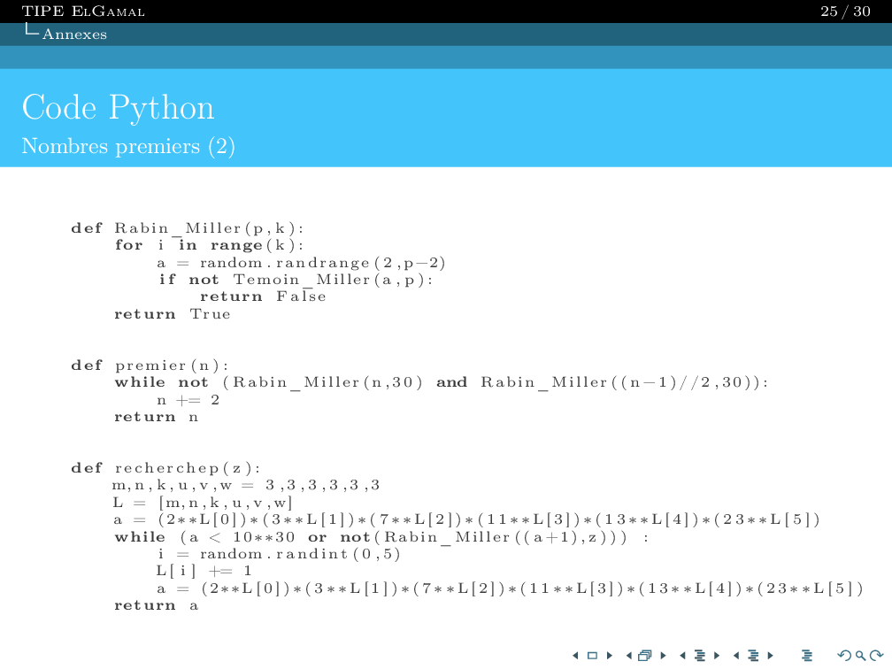
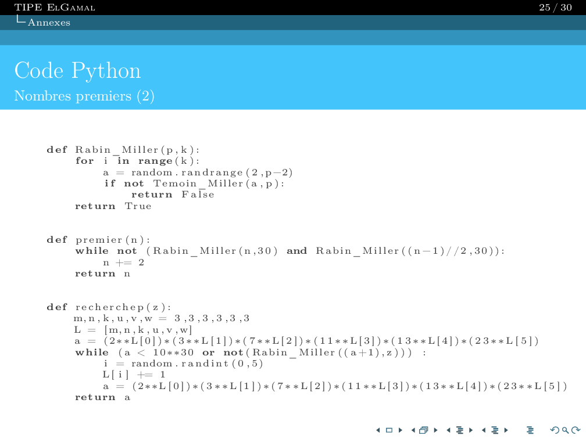

Je suis
Étudiant Ingénieur en informatique.
Actuellement en stage à EUROCONTROL.
Étudiant ingénieur en dernière année à l'ISIMA, je suis à la recherche d'un CDI à partir de mi-octobre 2024 dans les domaines du développement logiciels et/ou de l'intelligence artificielle, en région brestoise.


 

 
